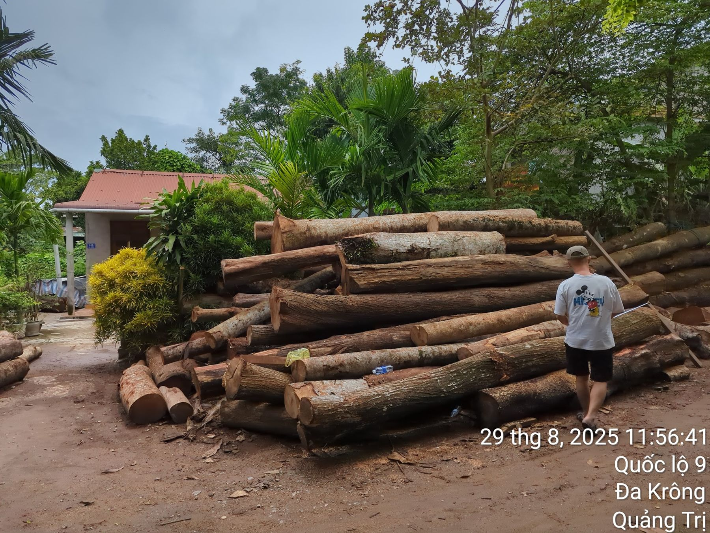
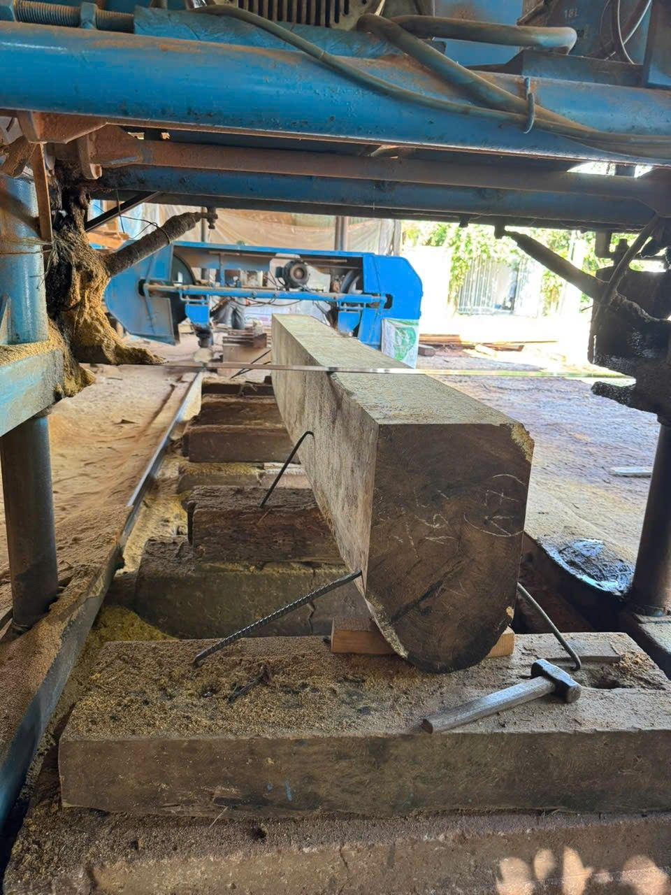
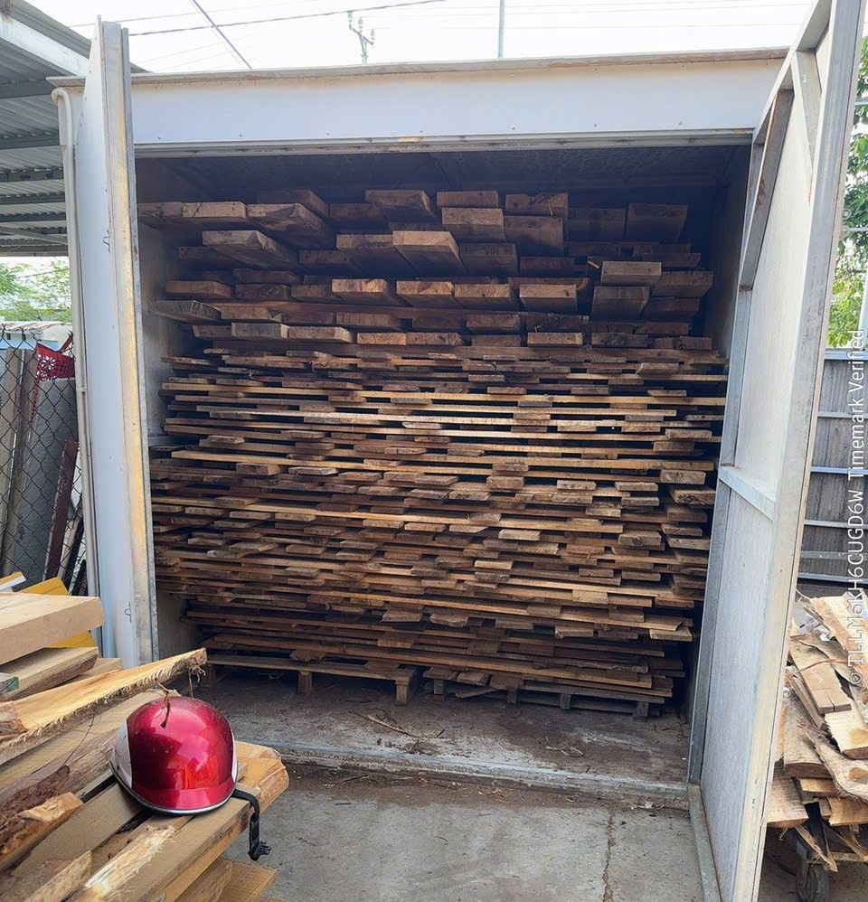
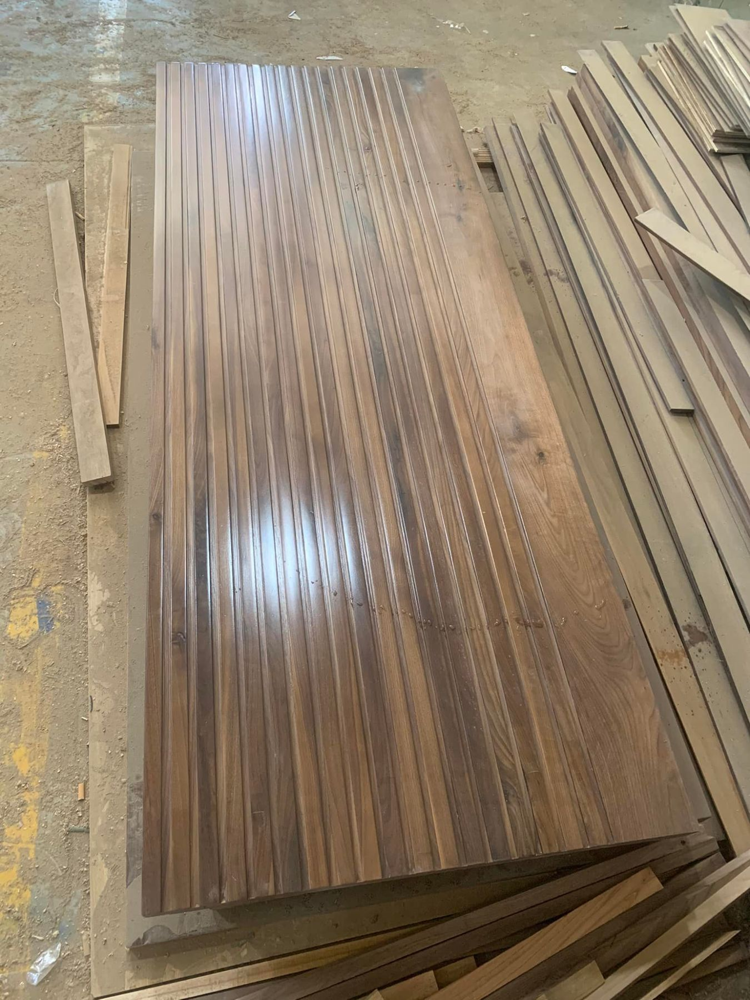

Về chúng tôi
Artistry in Wood.
Cửa Gỗ Đà Nẵng là thương hiệu chuyên về cửa của SUNFLOWER Interior Solutions — xưởng sản xuất nội thất gỗ đặt tại Đà Nẵng, thi công trên cả nước.
Câu chuyện
Từ nội thất cho các thương hiệu quốc tế đến bộ cửa cho từng ngôi nhà.
Hơn 15 năm qua, SUNFLOWER đã thi công nội thất gỗ cho hơn 100 công trình tại hơn 15 tỉnh thành — trung tâm thương mại AEON, cửa hàng Uniqlo, MUJI, H&M, khách sạn, villa và nhà phố. Những tiêu chuẩn khắt khe đó được mang vào từng bộ cửa chính: đúng bản vẽ, đúng vật liệu, đúng tiến độ.
Cửa Gỗ Đà Nẵng ra đời để tập trung vào một sản phẩm duy nhất mà mỗi gia đình đều cần — bộ cửa đi vào nhà.
Tại xưởng
Từ cây gỗ tròn đến cánh cửa.
Chúng tôi tự chọn gỗ tại bãi, xẻ, sấy và gia công tại xưởng Điện Bàn — kiểm soát độ ẩm và chất lượng từ đầu, để cánh cửa không cong vênh theo năm tháng.




Cam kết
Ba điều chúng tôi giữ.
Tự sản xuất
Gia công tại xưởng Đà Nẵng, kiểm soát từ phôi gỗ đến lớp sơn cuối.
Báo giá minh bạch
Bảng BOQ chi tiết từng hạng mục, vật liệu, mã phụ kiện.
Bảo hành rõ ràng
Giấy bảo hành SUNFLOWER cho mỗi công trình bàn giao.